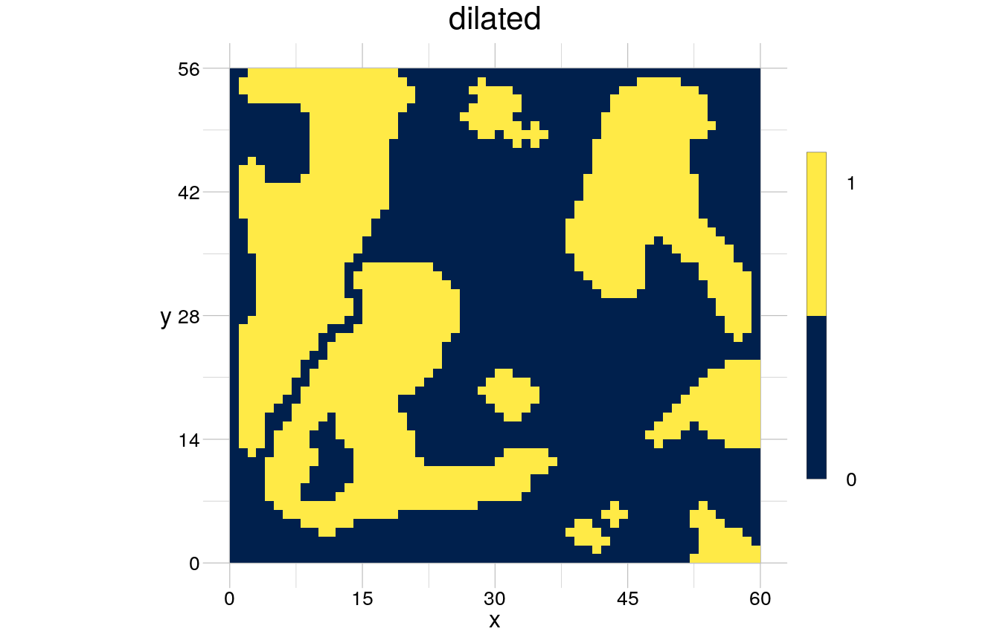
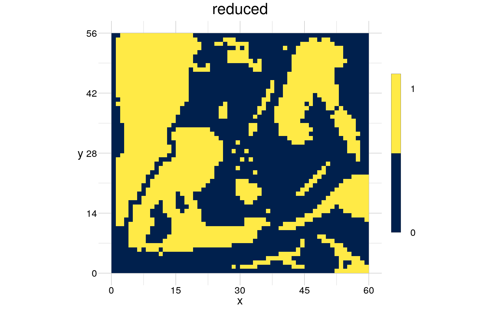
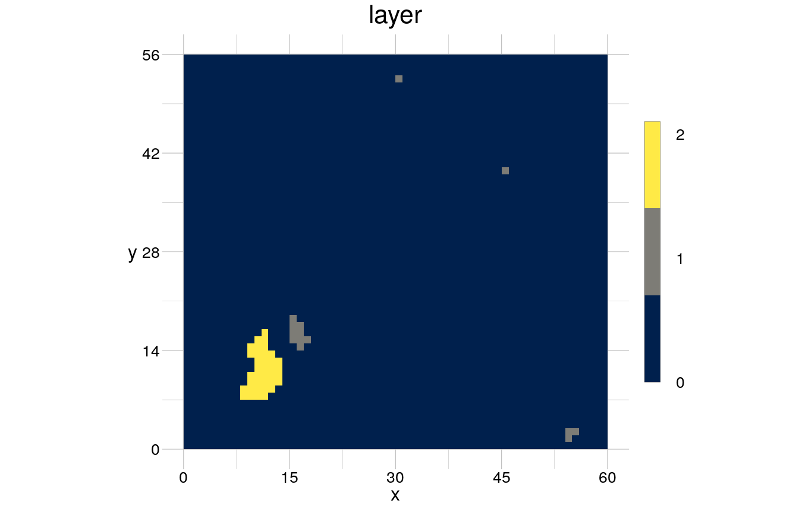
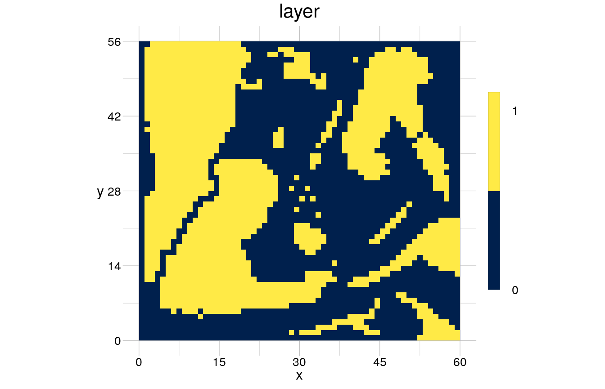
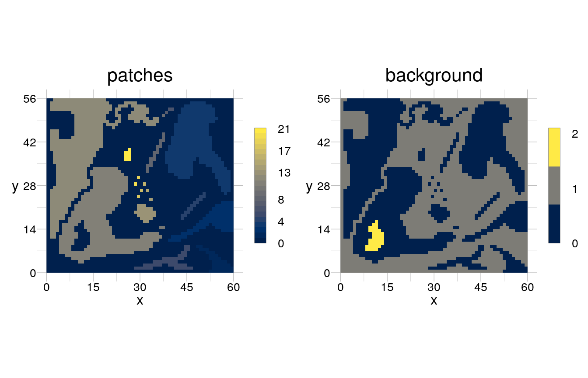
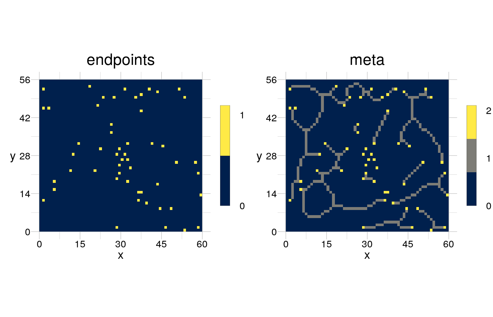

In this document you can find a collection of spatial operations that can be carried out specifically with rasterTools. The spatial operations are eventually presented as algorithms that can be used on the specified spatial data type. It is assumed that you have read the Introduction and understand what operator and algorithm means in the scope of rasterTools. Beware that this file is a constantly ongoing work in progress. In case you use rasterTools and came up with a nice algorithm, let me know, I would love to include it here!
The following is a list of all the topics covered so far:
- Morphological operations
- Identify features/objects
- Media axis transform
- Openings/Perforations
- Signature points in a skeleton
- Identify core/ecotone habitat
- Identify boundaries
- Identify corridors
- Identify interrupted corridors
- Identify parallel structures
- Identify openings that are connected to the background (e.g. clearcuts)
- Classify values
- Click into a map (cf HistMapR)
- Classify boundaries
- Distance Maps
- Other
- Determine sharpness of a boundary
Getting Started
Lets start with reading in the required packages.
library(rasterTools)
#> Hi, I am rasterTools 0.6 and I help you organise and compute spatial data!
#> I don't know where your files are stored, please see '?setPaths' to create a suitable index.
library(raster)
#> Loading required package: sp
library(magrittr)
#>
#> Attaching package: 'magrittr'
#> The following object is masked from 'package:raster':
#>
#> extractFor now, we can just ignore the note to run updatePaths, because we do not access the paths. We do however access the spatial example datasets of rasterTools, so lets assign these more intuitive names.
continuous <- rtData$continuous
categorical <- rtData$categorical
visualise(raster::stack(continuous, categorical))Moreover, we need to create a frequently occurring derivations thereof, a binarised raster, where some class(es) have been set as focal class. Here we derive them from the categorical raster, but this could as well be done from the continuous raster.
Morphological operations
Morphologically open foreground
The morphological operation open is an erosion, followed by a dilation. It results in a raster where cells at the boundary of patches are removed if they are exposed. Exposed means here, that they are protruding to a degree that an erosion removes them so that a dilation isn’t able to reconstruct them. The result depends on the chosen kernel, which must be the same in both operations.

Morphologically close foreground
The morphological operation close is a dilation, followed by an erosion. It results in a raster where cells at the boundary of patches are added if this would lead to a closed patch. In this case, the dilation would add cells that an erosion could not remove because they are now “inside” a patch. The result depends also here on the chosen kernel, which again must be the same in both operations.
Instead of using the pipeline notation, we can construct an algorithm.
closePatches <- list(list(operator = "rDilate"),
list(operator = "rErode"))
closed <- modify(input = binarised, by = closePatches, sequential = TRUE)
visualise(closed, trace = TRUE)
#> this object has the following history:
#> -> the object was loaded from memory
#> -> the values have been binarised
#> -> the raster has been morphologically dilated
#> -> the raster has been morphologically erodedIdentify spatial features
Identify the Medial axis
The medial axis transform (MAT) results in a non-binary skeleton where each cell has the value of its distance to the original boundary. This can be calculated by determining the skeleton and the interior distance map of each patch. These two objects would be intersected by using the skeleton as mask on the distance map.
skeletonised <- binarised %>%
rSkeletonise() %>%
rFillNA()
distances <- binarised %>%
rPermute() %>%
rDistance()
MAT <- rMask(obj = distances, mask = skeletonised)
visualise(MAT)
We see that increasingly complex computations become more and more wordy, which can be a source of error and confusion. We may thus again use an algorithm. Admittedly, it is not necessarily less wordy but it represents a more explicit declaration of the steps taken to derive the final object (and does not depend on other packages). Moreover, this algorithm can be used on any object (for which it has been devised). The object is independently defined in the call to modify, in contrast to the pipeline notation that needs to be adapted every time the objects change. Eventually the “clunky” nature of this algorithm pays off when it is used multiple times in conjunction with modify.
getMedialAxis <- list(skeleton = list(operator = "rSkeletonise", background = 0),
medAxis = list(operator = "rPermute"),
medAxis = list(operator = "rDistance"),
medAxis = list(operator = "rMask", mask = "skeleton"))
MedialAxis <- modify(input = binarised, by = getMedialAxis)
visualise(MedialAxis$medAxis)Identify openings/perforations
We may be interested in openings (or perforations, as they are called elsewhere) of foreground patches out of several reasons. Hence, we either want to end up with a raster of the openings without anything else, or a raster where the openings are labelled in a systematic way.
To derive openings, we first have to determine the foreground patches, for which the rather straightforward algorithm below can be used.
getPatches <- list(list(operator = "rBinarise", thresh = 30),
list(operator = "rPatches"))
patches <- modify(input = continuous, by = getPatches, sequential = TRUE)
visualise(patches)We see that there are several patches that haven an opening, but there is also an “opening” between the large lower-left greyish patch and its tiny neighbour to the bottom. In some situations this tiny neighbour might be a full-grown patch and we may have to delimit it from the northern neighbour, perhaps due to some ecological considerations. To delimit patches from each other and determine only true openings, we should segregate the raster into patches and carry out our identification algorithm per patch.
getSegPatches <- list(list(operator = "rBinarise", thresh = 30),
list(operator = "rPatches"),
list(operator = "rSegregate", flatten = TRUE, background = 0))
foregroundPatches <- modify(input = continuous, by = getSegPatches, sequential = TRUE)
visualise(foregroundPatches[[c(2, 26)]])
From here, we can then invert the raster and determine and label the background patches, of which an opening would be one in a binarised raster, which results in the following algorithm.
getBGPatches <- list(background = list(operator = "rBinarise", thresh = 30),
background = list(operator = "rPatches"),
background = list(operator = "rSegregate", background = 0),
background = list(operator = "rBinarise", thresh = 1),
background = list(operator = "rPermute"),
background = list(operator = "rPatches"),
background = list(operator = "rReduce", fun = max),
background = list(operator = "rFillNA"))
backgroundPatches <- modify(input = continuous, by = getBGPatches)
visualise(backgroundPatches, trace = TRUE)
#> this object has the following history:
#> -> the object was loaded from memory
#> -> the values have been binarised
#> -> patches have been determined
#> -> the raster has been segregated
#> -> in layers: the values have been binarised
#> -> in layers: values have been inverted
#> -> in layers: patches have been determined
#> -> layers have been reduced into 1 new layer
#> -> NA has been replaced with 0We should also aggregate the foreground patches, which we can do without any further considerations, because we do not modify the morphology of the patches.

As we have set background values to 0 throughout, we end up with two rasters that don’t contain any unknown values and we can do some raster arithmetics on them. Both, foreground patches and the matrix as the first background patch (i.e. the area which is not part of the greater patch) have the value 1 after applying the above computations. All background patches that are not matrix are openings and have a value larger than 1. Hence, we can get an object where merely the openings are provided by summarising foreground and background patches and subtracting 1. The value of the resulting openings is their running number per patch in which they are embedded.

Moreover, we can determine the greater patch (i.e. the patch if it had no opening) by summarising the foreground patches and the binarised openings.

In a situation where patches may be more clearly outlined, we could also use the less complex algorithm below, where we can avoid segregating the patches. From its output, some raster arithmetics can again lead to the desired result.
findOpening <- list(patches = list(operator = "rPatches"),
patches = list(operator = "rFillNA"),
background = list(operator = "rPermute"),
background = list(operator = "rPatches"),
background = list(operator = "rFillNA"))
background <- modify(input = binarised, by = findOpening, merge = TRUE)
visualise(background)
Identify signature points in a skeleton
skeleton <- rSkeletonise(binarised, background = 0)
kernels <- list(matrix(c(NA, 0, 0, NA, 1, 0, NA, 0, 0), 3, 3),
matrix(c(NA, 0, 1, 1, 1, NA, NA, 0, 1), 3, 3),
matrix(c(1, NA, 1, NA, 1, NA, NA, NA, 1), 3, 3),
matrix(c(NA, 1, NA, 0, 1, 1, 1, 0, NA), 3, 3))
getMetaSkel <- list(endpoints = list(operator = "rMatch",
kernel = matrix(c(NA, 0, 0, NA, 1, 0, NA, 0, 0), 3, 3),
background = 0),
meta = list(operator = "rBlend", overlay = "endpoints"))
skeletonMeta <- modify(input = skeleton, by = getMetaSkel, merge = TRUE)
visualise(skeletonMeta, trace = TRUE)
#> the layer 'endpoints' has the following history:
#> -> the object was loaded from memory
#> -> the values have been binarised
#> -> the morphological skeleton has been determined
#> -> cells have been matched with a 3x3 kernel with values NA 0 0 NA 1 0 NA 0 0
#> the layer 'meta' has the following history:
#> -> the object was loaded from memory
#> -> the values have been binarised
#> -> the morphological skeleton has been determined
#> -> the raster has been blended # Classify values {#classify}
Classify a raster by clicking on colour values (cf HistMapR)
The HistMapR package can be used to digitise historic land-use maps in R, according to the authors. However, what their package actually does, in contrast to what is stated in the title, is (re)classifying values that are expressed as colour on a screen into numeric values that represent land use classes. The digitising part comes already long before, when the orthophotos are transformed from paper to digital form, but this is unfortunately not touched on in that package.
Here I want to suggest a simpler and more straightforward to understand workflow that can be carried out with the rasterTools package. Generally speaking, one would carry out a supervised classification procedure on an orthophoto that has previously been made available digitally. As already outlined, the basic idea is to identify (colour) values in the original raster to assign them, after determining sensible thresholds, into new classes. Using rasterTools, these operations can be carried out by utilizing mostly the locate() and rCategorise() functions.
Some background: All raster objects store data as matrix/array of values. However, the information that is carried by the values differs between datasets. One could consider an image/photo as part of the dataset “spectral properties of stuff” as each image records the red, green and blue radiation that is reflected by stuff. Orthophotos are not different, they also consist of a red, green and blue channel. These channels carry actually the intensity of that colour per pixel, which ranges from 0 to 255. The channels are typically combined and gain their colour qualia only because they are combined. When visualise() is used to plot an image, it abstracts the colour information (of potentially > 1.000.000 colours) into a smaller set of values, 256 to be precise. This process already comprises an act of classifying because a range of (admittedly very similar) colours are aggregated into one colour value that is then displayed. This is no problem, because let’s be honest, you probably can’t even remotely distinguish 200 different colours from a give colour scale with your naked eye! Nevertheless, what happens here - and actually also with other functions that plot stuff in R, for that matter - is that the original colours of your map were assigned into 256 classes of similar colours. What we now want to do is distinguish these colours into a substantially smaller set of classes that represent the most likely land use in each of the grid cells.
If you did not install the HistMapR package yet, do that now:
We use the example dataset that comes with the package (in.ras).
this is still wip
Distance Maps
Compute the distance map of centroids per patch
We may be interested in distance maps to calculate a range of landscape metrics. For example, the Radius of Gyration derives from the average distance of all cells of a patch to the patches’ centroid. To calculate it, we would have to find the patch centroid and the patch specific distance of each cell of a patch to its centroid.
centDistMap <- list(dis = list(operator = "rCentroid", background = 0),
dis = list(operator = "rBinarise", thresh = 1),
dis = list(operator = "rDistance"),
dis = list(operator = "rOffset"),
dis = list(operator = "rMask", mask = "input"),
dis = list(operator = "rFillNA"))
DistMap <- modify(input = binarised, by = centDistMap)
visualise(DistMap)We see, however, that the distances of some centroids overlap with patches to which they do not belong. Hence, we have to segregate the raster into its patches.
getCentDist <- list(patchesMask = list(operator = "rSegregate"),
patchesMask = list(operator = "rFillNA"),
distances = list(operator = "rSegregate"),
distances = list(operator = "rFillNA"),
distances = list(operator = "rCentroid", background = 0),
distances = list(operator = "rDistance"),
distances = list(operator = "rOffset"),
distances = list(operator = "rMask", mask = "patchesMask"),
distances = list(operator = "rFillNA"),
distances = list(operator = "rReduce", fun = max))
patchObj <- rPatches(binarised)
centDistMap <- modify(input = patchObj, by = getCentDist, keepInput = TRUE)
centDistMap <- raster::stack(centDistMap[c(1, 3)])
visualise(centDistMap)See [link to radius of gyration metric] for how to proceed from here to calculate the Radius of Gyration.